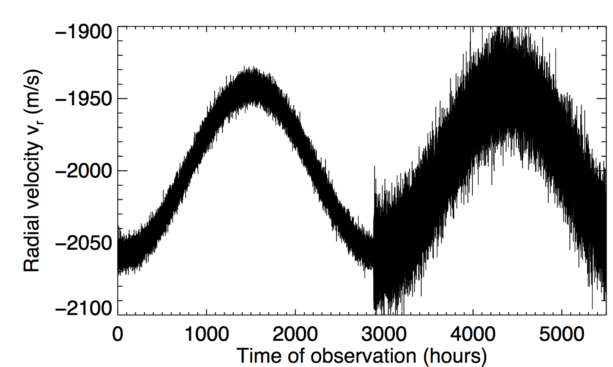

Forrige side

På figuren ser du observasjoner av en hastighetskurve med to forskjellige teleskoper, et med betydelig høyere støynivå enn det andre. Dermed er standardavviket σn for støyen også forskjellig. Omtrent hva er σn for hver av disse instrumentene? La oss kalle observasjonene til venstre med minst støy for A og de til høyre med mest støy for B.
σnA ≈ 1930m/s og σnB ≈ 1900m/s σnA ≈ 140m/s og σnB ≈ 200m/s σnA ≈ 30m/s og σnB ≈ 80m/s σnA ≈ 15m/s og σnB ≈ 40m/s σnA ≈ 7 m/s og σnB ≈ 20m/s Neste side